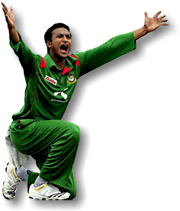

SHAKIB AL HASAN
Bangladeshi International Cricketer
- Bangladesh
- Height: 1.75 m; Style: All-rounder
- March 24, 1987; Magura, Bangladesh

Shakib Al Hasan is a Bangladeshi international cricketer. He is considered to be one of the greatest all-rounders of all time. He was ranked as one of the world's most famous athletes by ESPN World Fame 100 in 2019.
Shakib Al Hasan’s sensational run over in the group stage of the T20 World Cup witnessed shades of the very best from the all-rounder as he finished with 108 runs and nine wickets in three games for Bangladesh.
39 - Wickets for Shakib Al Hasan in T20 World Cups. These are the joint-most for a bowler in this competition. Shahid Afridi, who last played in 2016, also has 39 wickets.
2 - Shakib is just the second player with the double of 40-plus runs and over four wickets in a T20 World Cup game. Dwayne Bravo became the first player when he backed up his four-wicket haul with an unbeaten 66 against India in 2009 at Lord's.
2 - Previous instances of Shakib scoring 40-plus runs and taking four or more wickets in the same T20I - against Zim'13 and WI'18. While Shakib now has three such all-round efforts, no player has achieved it more him in men's T20Is.